Datos del cliente
Esta es una de los principales formularios a los que se puede acceder desde la opción Consulta clientes contenida en el core y desde cualquier de los hipervínculos contenidos en los diferentes formularios del aplicativo habilitados para permitir consultar la información de un clinete. Esta opción contiene la información básica de todos los clientes de la entidad bien sea potenciales o efectivos, personas naturales o jurídicas, con lo cual la entidad o corporación puede realizar gestiones de mercadeo tales como segmentaciones o campañas comerciales.
La opción está compuesta por una serie de formularios en los cuales se despliega de manera ordenada y agrupada la información principal del cliente. Por defecto, al ingresar a esta opción el primer formulario que se muestra es el de información general el que contiene los hipervínculos Referencias, Financiera, Saldos, Novedades, Tarjetas, Solicitudes y Calificaciones que permiten hacer el llamado de los restantes formularios que componen la opción de datos del cliente.
Información general: este formulario despliega los datos básicos de identificación e información particular y/o exclusiva de cada cliente o tarjetahabiente, y según se trate de una persona natural o jurídica muestra un grupo de datos diferente para cada una de ellas. El formulario contiene adicionalmente un bloque de datos con la información de las direcciones del cliente.
Personas naturales: si el cliente que se desea consultar es tipo de persona natural, el formulario desplegado es el siguiente.
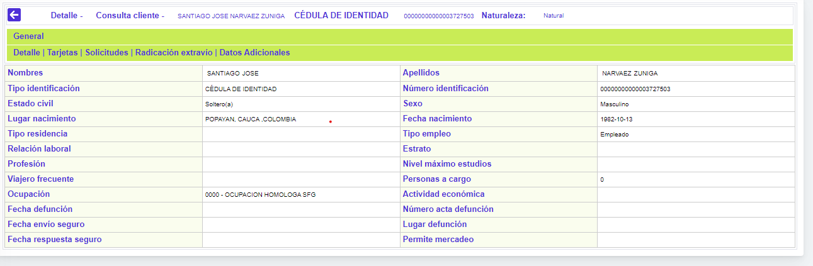
Descripción de campos
|
Nombres |
Campo que muestra los nombres del cliente. |
|
Apellidos |
En este campo se despliegan los apellidos del cliente. |
|
Tipo identificación |
Campo que indica el tipo de documento de identidad asociado al cliente. |
|
Número identificación |
En este campo se despliega el número de identificación del cliente. |
|
Estado civil |
Campo en el que se indica el estado civil actual del cliente. |
|
Sexo |
En este campo se muestra el género del cliente. |
|
Lugar de nacimiento |
Campo en el que se indica la ubicación geográfica correspondiente al sitio de nacimiento del cliente. |
|
Fecha de nacimiento |
En este campo se muestra en formato YYYY-MM-DD la fecha de nacimiento del cliente. |
|
Tipo de residencia |
Campo en el que se indica si la residencia reportada por el cliente es propia, arrendada o familiar. |
|
Tipo de empleo |
Este campo contiene información sobre si el cliente o tarjetahabiente es dependiente o independiente lo que permite establecer indirectamente la fuente de ingresos del mismo. |
|
Relación laboral |
Señala la clase de relación laboral que detenta el cliente y que puede servir de base para la asignación del cupo. |
|
Estrato |
En este campo se indica la estratificación socio económica a la que pertenece el cliente. |
|
Profesión |
Campo en el que se despliega la información acerca de la profesión del cliente. |
|
Nivel máximo de estudios |
En este campo se muestra el dato correspondiente al mayor grado de estudios o educación alcanzado por el cliente. |
|
Viajero frecuente |
Campo que indica si el cliente es viajero frecuente o no, lo que junto con otros datos le permite a la entidad, por ejemplo, emitir un plástico adicional como Premiun Pass o asociarlo a un esquema de puntajes. |
|
Personas a cargo |
En este campo se indica la cantidad de personas que dependen económicamente del cliente. |
|
Ocupación |
Campo en el que se muestra la ocupación actual del cliente. |
|
Actividad económica |
En este campo se muestra la actividad económica desarrollada por el cliente. |
|
Fecha de defunción |
Campo que en caso que el cliente haya fallecido, muestra en formato YYYY-MM-DD la fecha en la cual se produjo su deceso. |
|
Número acta defunción |
En este campo se despliega según corresponda, el número de acta en la que consta el fallecimiento del cliente. |
|
Fecha envío seguro |
Campo en formato YYYY-MM-DD que indica si es el caso la fecha en la cual la entidad envió al seguro la reclamación por las obligaciones vigentes y no canceladas por parte del cliente, en caso que este hubiere fallecido. |
|
Lugar de defunción |
En este campo se despliega la ubicación geográfica correspondiente al sitio de fallecimiento del cliente. |
|
Fecha respuesta seguro |
Campo que muestra en formato YYYY-MM-DD la fecha en al cual el seguro dió respuesta a la entidad respecto de las reclamaciones presentadas por las obligaciones insolutas del cliente, en el evento de su fallecimiento. |
|
Permite mercadeo |
En este campo se indica si el cliente ha autorizado o no el envío de publicidad y otros tipos de información dentro de los planes de mercadeo de la entidad. |
Personas jurídicas: si el cliente que se desea consultar es tipo de persona jurídica, el formulario desplegado es el siguiente.
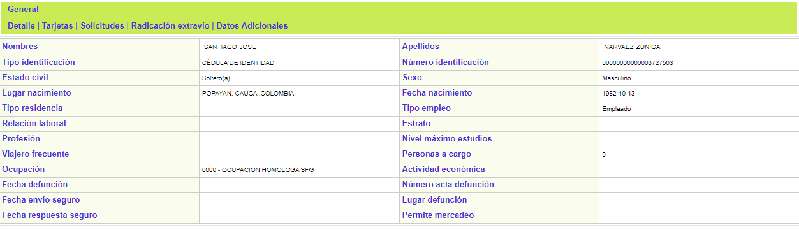
Descripción de campos
|
Nombre |
En este campo se muestra la razón social de la persona jurídica. |
|
Tipo identificación |
Campo que indica el tipo de documento de identidad asociado al cliente. |
|
Número identificación |
En este campo se despliega el número de identificación del cliente. |
|
Escritura |
Campo en el que se indica el número de escritura mediante la cual se constituyó la sociedad. |
|
Representante legal |
Este campo muestra el nombre de la persona que hace las veces de representante legal de la sociedad. |
|
Escritura |
Campo que contiene el número de escritura mediante la cual se constituyó la sociedad. |
|
Fecha de constitución |
En este campo se muestra en formato YYYY-MM-DD la fecha de constitución de la sociedad. |
|
Capital social |
Campo en el que se muestra el monto correspondiente al capital de la sociedad. |
|
Notaría |
Este campo despliega la información de la notaría ante la cual se elevó la escritura de constitución de la sociedad. |
|
Ubicación |
Campo en el que se indica la ubicación geográfica en la cual se encuentra ubicada la sede principal o domicilio de la sociedad. |
|
Tipo de sociedad |
En este campo se despliega el tipo de sociedad en que se encuentra constituido el cliente persona jurídica. |
|
Autonomía representante |
Señala el monto máximo autorizado al representante legal, para poder contratar o adquirir obligaciones a nombre de la empresa de manera directa. |
|
Viajero frecuente |
Campo que permite conocer si el cliente persona jurídica es viajero frecuente o no, lo que junto con otros datos le permiten a la entidad , por ejemplo, emitir un plástico adicional como Premiun Pass. |
|
Actividad económica |
En este campo se muestra la actividad económica desarrollada por la sociedad, de acuerdo con su objeto social. |
|
Registro cámara de comercio |
Indica el número del registro mercantil asignado al cliente, por la seccional de la Cámara de comercio o quien haga sus veces. |
|
Tipo de empresa |
Campo en el que se despliega la indicación del tipo de empresa a la que pertenece el cliente. |
|
Utilidad neta mensual |
Contiene la información de la utilidad neta estimada de la actividad económica desempeñada por el cliente |
|
Número de empleados |
Este campo contiene el dato acerca del número de empleados reportado por el cliente. |
|
Permite mercadeo |
Indica si el cliente autoriza o no incluirlo dentro de las campañas de mercadeo, y por lo tanto es posible generarle o no correspondencia comercial. |
Direcciones: en este bloque se muestra la información de todas las direcciones suministradas por el cliente o tarjetahabiente u obtenidas por terceros sobre los diferentes inmuebles (o medios de correo como el apartado aéreo) donde puede ser ubicado directa o indirectamente. Este bloque contiene la funcionalidad necesaria para permitirle a la entidad ingresar o modificar los datos correspondientes a las direcciones del cliente, a través de la respectiva novedad.
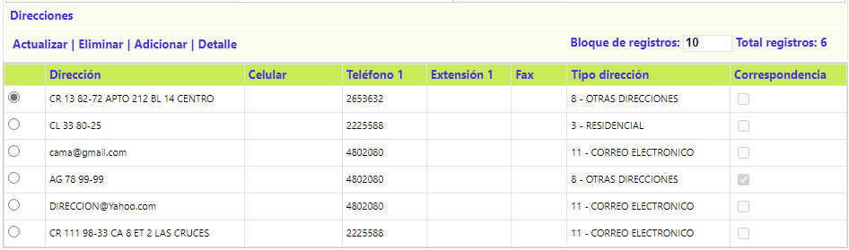
Descripción de campos
|
Dirección |
Campo que registra la nomenclatura de cada inmueble (o medios de correo como el apartado aéreo) en los que es posible ubicar al cliente. |
|
Celular |
Despliega, si lo hay, el número del teléfono celular del cliente |
|
Teléfono 1 |
Contiene el número de teléfono asociado a la dirección y en el cual es posible ubicar al cliente. |
|
Extensión 1 |
En caso de aplicar, registra la extensión en la cual se localiza al cliente. |
|
Fax |
Registra el número del fax al que es posible enviar comunicados al cliente. |
|
Tipo de dirección |
Indica si la dirección registrada es la comercial, familiar, del cónyuge, etc. |
|
Correspondencia |
Campo que al estar marcado, indica que la dirección registrada es aquella a la cual el cliente desea se le dirija toda su correspondencia. |
Referencias: en este formulario se muestra la información suministrada tanto por entidades financieras como por establecimientos de comercio o personas naturales, familiares, etc., sobre la moralidad comercial y personal del cliente o tarjetahabiente, cuya importancia relativa, en cuanto a su cantidad y calidad, puede reflejarse en los resultados de campañas de mercadeo o, llegado el caso, en la cobranza efectiva de cartera morosa. El formulario se encuentra estructurado en cuatro bloques de datos a saber: referencias laborales, referencias bancarias, otras referencias y relaciones personales.
Referencias laborales: en este formulario se muestra la información acerca de la historia laboral del cliente o tarjetahabiente. Este bloque contiene la funcionalidad necesaria para permitirle a la entidad ingresar o modificar los datos correspondientes a las referencias laborales del cliente, a través de la respectiva novedad.
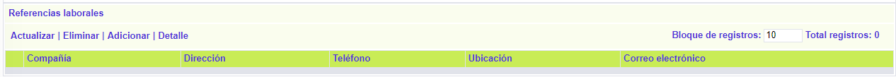
Descripción de campos
|
Compañia |
Contiene el nombre o razón social de las diferentes empresas para las cuales ha laborado o labora actualmente el cliente. |
|
Dirección |
Indica nomenclatura exacta de cada una de las empresas en las cuales el cliente ha prestado sus servicios |
|
Teléfono 1 |
Campo que muestran la información de los números telefónicos de las empresas para las cuales ha laborado el cliente y en los cuales es posible verificar la referencia. |
|
Ubicación |
Despliega la ubicación geográfica correspondiente a la dirección de la empresa. |
|
Correo electrónico |
Indica la dirección de correo electrónico de las empresas para las cuales ha laborado el cliente. |
Referencias bancarias: en este formulario se muestra la información de los vínculos del cliente o tarjetahabiente con el sistema financiero y el estado o comportamiento frente a los mismos. Este bloque contiene la funcionalidad necesaria para permitirle a la entidad ingresar o modificar los datos correspondientes a las referencias bancarias, a través de la respectiva novedad.
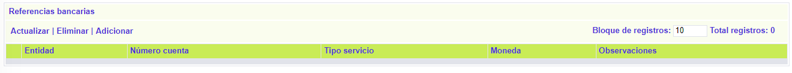
Descripción de campos
|
Entidad |
Campo que muestra el nombre de la entidad financiera con la cual existen o han existido vínculos comerciales. |
|
Número de cuenta |
Contiene el número de cuenta o referencia que identifica el producto que el cliente posee (o tuvo) con la entidad financiera. |
|
Tipo de servicio |
Muestra el nombre o clase de producto asociado a los campos anteriores. |
|
Moneda |
Indica la denominación de la moneda en la que se expresa el crédito concedido al cliente por la entidad financiera. |
|
Observaciones |
Campo en el que están registrados los datos adicionales relevantes como la síntesis del concepto o referencia emanado de la entidad financiera con la cual existen o existieron vínculos. |
Otras referencias: en este formulario se muestra la información de las demás referencias diferentes a las bancarias y laborales tales como comerciales, personales y familiares suministradas y/o confirmadas. . Este bloque contiene la funcionalidad necesaria para permitirle a la entidad ingresar o modificar los datos correspondientes a las otras referencias , a través de la respectiva novedad.
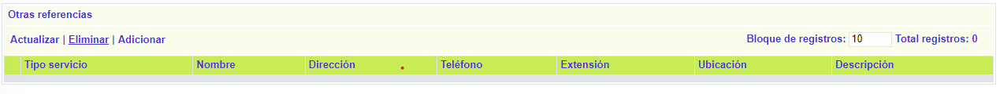
Descripción de campos
|
Tipo referencia |
Campo que ilustra la fuente de la información sobre el cliente y que puede ser Personal o Comercial. |
|
Nombre |
Contiene el nombre de la persona natural o jurídica que suministra la referencia sobre el cliente. |
|
Dirección |
Este campo indica a la nomenclatura donde se ubica la persona natural o jurídica que suministra la referencia sobre el cliente. |
|
Teléfono |
Campo en que se muestran los números telefónicos en los que es posible ubicar a la persona natural o jurídica que suministra la referencia sobre el cliente. |
|
Extensión |
Si aplica, despliega el número de la extensión telefónica en la que se ubica la persona encargada de dar la información sobre el cliente. |
|
Ubicación |
Despliega la ubicación geográfica correspondiente a la dirección de la persona natural o jurídica que suministra la referencia sobre el cliente. |
|
Descripción |
Campo en el que están registrados el resumen o información importante obtenida como resultado de la verificación de la referencia. |
Relaciones personales: en este formulario se muestra la información correspondiente a los vínculos que posee el cliente con otros clientes de la entidad, quienes previamente han sido ingresados al sistema y eventualmente pueden ser clientes potenciales para la misma. Este bloque contiene la funcionalidad necesaria para permitirle a la entidad ingresar o modificar los datos correspondientes a las relaciones personales , a través de la respectiva novedad.
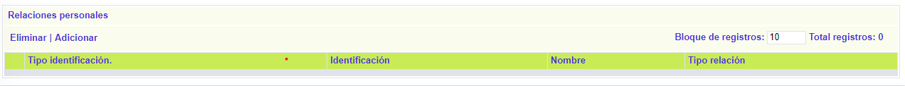
Descripción de campos
|
Tipo de identificación |
Contiene el tipo de documento de identidad correspondiente al cliente con el cual existe alguna relación con el actual. |
|
Identificación |
Indica el número de identificación del cliente relacionado. |
|
Nombre |
Campo que muestran el nombre del cliente a quien pertenece el tipo y número de identificación y con el que existe la relación. |
|
Tipo de relación |
Despliega el tipo de relación existente entre los dos clientes. |
Financiera: en este formulario se muestra la información que permite conocer la situación financiera y patrimonial del cliente o tarjetahabiente. El formulario se encuentra estructurado en tres bloques de datos: información de bienes, obligaciones financieras e información balance.
Información de bienes: en este formulario se muestra la información acerca los diferentes bienes y activos que posee el cliente. Este bloque contiene la funcionalidad necesaria para permitirle a la entidad ingresar o modificar los datos correspondientes a los bienes del cliente, a través de la respectiva novedad.
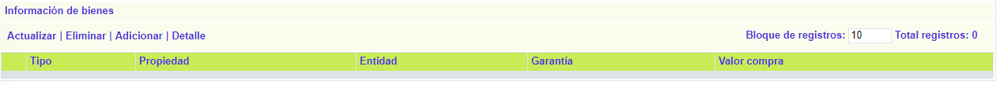
Descripción de campos
|
Tipo |
Indica de bien o activo poseído por el cliente. |
|
Propiedad |
En este campo se señala si el bien es Propio o sobre el pesa alguna Prenda o Hipoteca. |
|
Entidad |
Si el bien no es propio, en este campo se despliega la información referente al nombre de la persona natural o jurídica, o de la entidad financiera a favor de quien se encuentra constituida la Prenda o Hipoteca. |
|
Garantía |
Campo en el cual se indica, en caso de aplicar, el tipo de garantía constituída sobre el bien, cuando este se encuentra en prenda o hipoteca. |
|
Valor de compra |
Indica el monto por el cual el cliente adquirió el bien o activo reportado. |
Obligaciones financieras: en este formulario se muestra la información de las obligaciones financieras que el cliente posee. Este bloque contiene la funcionalidad necesaria para permitirle a la entidad ingresar o modificar los datos correspondientes a las obligaciones financieras del cliente, a través de la respectiva novedad.
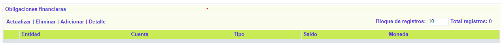
Descripción de campos
|
Entidad |
Campo que muestra el nombre de la entidad financiera con la cual el cliente ha contraído alguna obligación y se encuentra vigente. |
|
Número de cuenta |
Indica el número que identifica la obligación que el cliente adquirió con la entidad. |
|
Tipo |
Señala que clase de obligación (tarjeta de crédito, crédito hipotecario, etc) adquirió el cliente con la entidad. |
|
Saldo |
Este campo contiene el valor que el cliente aún adeuda a la entidad por concepto de la obligación contraída. |
|
Moneda |
Indica la denominación de la moneda en la que se encuentra expresada la obligación contraída por el cliente con la entidad financiera. |
Información balance: en este formulario se muestra la información sobre los ingresos y egresos del cliente o tarjetahabiente persona natural o activos y pasivos para personas jurídicas, asociándole a cada uno tanto la moneda en que se denomina como la fecha para la cual la información es válida o vigente. Este bloque contiene la funcionalidad necesaria para permitirle a la entidad ingresar o modificar los datos correspondientes al balance del cliente, a través de la respectiva novedad.
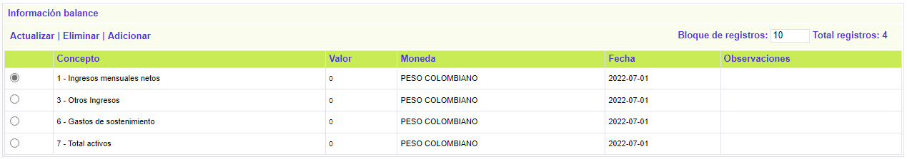
Descripción de campos
|
Concepto |
Campo que indica si la información relacionada por el cliente corresponde a un ingreso o egreso. |
|
Valor |
Indica el valor del ingreso o egreso reportado por el cliente. |
|
Moneda |
Este campo Indica la denominación de la moneda en la que se encuentra expresado el ingreso o egreso relacionado por el cliente. |
|
Fecha |
Campo en formato YYYY-MM-DD que contiene la fecha más reciente en la cual fue actualizado el registro del balance presentado por el cliente. |
|
Observaciones |
En este campo se registra información adicional que la entidad considere relevante. |
Saldos: en este formulario se muestra la información consolidada de los saldos de todas las tarjetas y obligaciones que la entidad le ha otorgado al cliente, constituyendo un resumen total de su estado. El formulario se encuentra dividido en tres bloques de datos: Estado actual, Detalle saldo total y Detalle moras.
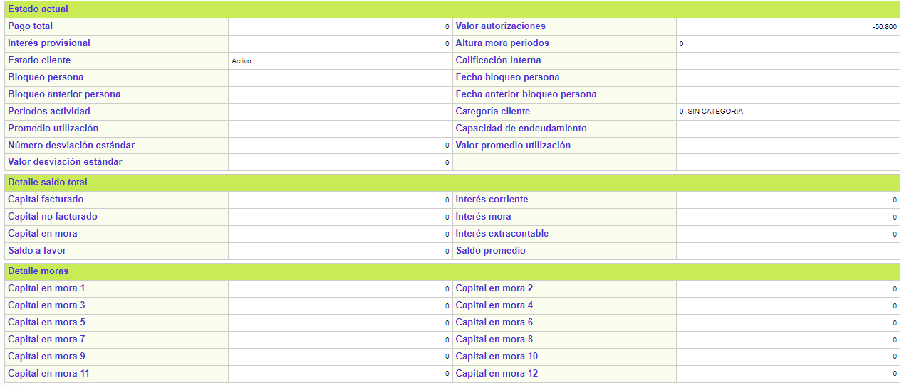
Descripción de campos
|
Pago total |
Campo en el que se indica el monto que a la fecha adeuda el cliente a la entidad por las diferentes tarjetas aprobadas. |
|
Valor autorizaciones |
En este campo se despliegael monto de las autorizaciones emitidas para las diferentes utilizaciones y que se encuentran pendientes por cruzar. |
|
Interés provisional |
Señala el valor acumulado de los intereses corrientes que la entidad espera recibir, calculados sobre los consumos aún no facturados. |
|
Altura mora periodos |
En este campo se indica la máxima altura de mora que presentan los productos que el cliente posee con la entidad. |
|
Estado cliente |
Campo en el que se indica el estado actual del cliente ante la entidad y que puede ser activo, inactivo, etc. |
|
Calificación interna |
En este campo se despliega la calificación interna del cliente obtenida a partir de la calificación individual de las diferentes obligaciones que tiene con la entidad. |
|
Bloqueo persona |
Según el caso, este campo muestra el bloqueo de persona que recae sobre el cliente. |
|
Fecha bloqueo persona |
En este campo se muestra en formato YYYY-MM-DD la fecha en la cual se aplicó el bloqueo de persona al cliente |
|
Bloqueo anterior persona |
Campo que contiene el el bloqueo de persona inmediatamente anterior, que tenía o tuvo el cliente. |
|
Fecha bloqueo anterior persona |
En este campo se muestra en formato YYYY-MM-DD la fecha en la cual se aplicó el anterior bloqueo de persona al cliente |
|
Periodos actividad |
Campo en el cual se indica la cantidad de periodos de actividad que el cliente tiene con la entidad. |
|
Categoría cliente |
Señala la categoría actual del cliente lo que puede determinar algunos beneficios particulares para él. |
|
Promedio utilización |
Campo que permite conocer el promedio de utilización que el cliente ha tenido con todos los productos que la entidad le ha otorgado. |
|
Número desviación estandar |
En este campo se muestra la actividad económica desarrollada por la sociedad, de acuerdo con su objeto social. |
|
Valor promedio utilización |
Indica el número del registro mercantil asignado al cliente, por la seccional de la Cámara de comercio o quien haga sus veces. |
|
Valor desviación estandar |
Campo en el que se despliega la indicación del tipo de empresa a la que pertenece el cliente. |
|
Capital facturado |
Contiene el valor de las utilizaciones efectuadas por el cliente con sus diferentes productos y que debe ser cancelada dentro del pago mínimo calculado por el sistema. |
|
Capital no facturado |
Este campo contiene el monto diferido que aún se encuentra pendiente de facturar y cobrar al cliente, por las utilizaciones hechas con sus tarjetas. |
|
Capital en mora |
Indica el monto actual acumulado de los saldos facturados en periodos anteriores y no han sido pagados por el cliente. |
|
Interés corriente |
Campo que muestra el monto de los intereses de financiación generados por las compras y/o avances a plazos efectuadas por el cliente. |
|
Interés de mora |
Este campo contiene el monto de los intereses que el cliente adeuda a la entidad por el no pago oportuno de sus obligaciones. |
|
Interés extracontable |
Muestra el valor resultante de la liquidación del beneficio esperado por la entidad sobre el saldo del capital cuya altura de mora supere los parámetros definidos por la entidad para la generación de este tipo de intereses. |
|
Saldo a favor |
Campo que indica los valores que han excedido el pago mínimo o total de los diferentes que el cliente posee con la entidad y que constituyen un saldo a su favor. |
|
Saldo promedio |
Este campo contiene el dato acerca del valor de saldo promedio que han tenido todas las tarjetas del cliente de acuerdo con las utilizaciones hechas. |
|
Capital en mora 1 ... 12 |
Campos en los que se muestra el valor de mora que presentan las diferentes tarjeta u obligaciones otorgadas al cliente para cada uno de los periodos. |
Novedades: en este formulario se muestra la información de las diferentes actualizaciones de datos del cliente que han sido efectuadas, bien sea reportadas por el propio cliente o que la entidad haya obtenido a través de otras fuentes como pueden ser centrales de información financiera, etc.
El formulario contiene la opción Detalles, que permite seleccionar un registro de novedad e invocar el formulario en el cual se puede ver la información que fue modificada o alterada.
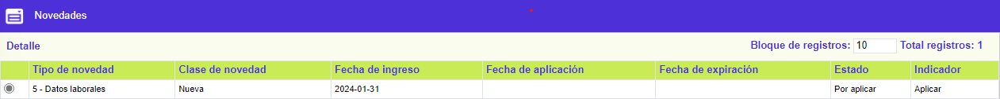
Descripción de campos
|
Fecha de aplicación |
Campo que muestra el formato YYYY-MM-DD la fecha en la cual se hicieron efectivos los cambios en la base de datos. |
|
Tipo de novedad |
En este campo se despliega el código y descripción de la novedad aplicada al cliente. |
|
Clase de novedad |
Señala si con la novedad se adicionó, modificó o eliminó información del cliente. |
|
Fecha de ingreso |
En este campo se indica en formato YYYY-MM-DD la fecha en la cual se registró el cambio de datos en el sistema. |
|
Fecha de expiración |
Campo en el que se indica en formato YYYY-MM-DD la fecha hasta la cual el registro de la novedad permanecerá en la base de datos. |
|
Estado |
En este campo se indica si la novedad ya fue Aplicada o si se encuentra Por Aplicar a causa de algún error o información inválida. |
|
Indicador |
Campo que muestra el resultado de la gestión hecha sobre la novedad y que puede ser Error, No aplicar o Aplicar dependiendo el tipo de acción ejecutado sobre la novedad. |
Tarjetas: en este formulario se despliega la información de todas las tarjetas que el cliente posea en la entidad. Si se requiere mayor información sobre alguna de éstas, basta con posicionarse en el registro correspondiente y utilizar el hipervínculo que se encuentra en el campo número tarjeta para que el sistema lo lleve al formulario correspondiente a la consulta del detalle de la tarjeta.
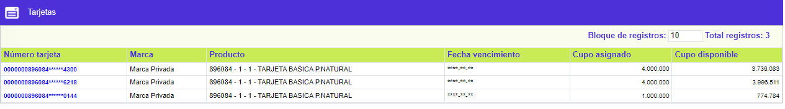
Descripción de campos
|
Número de tarjeta |
Campo que muestra el número de cada una de las tarjetas que el cliente posee con la entidad. Este campo es un hipervínculo que le permite al usuario ir directamente a la consulta del detalle de la tarjeta |
|
Marca |
Despliega el nombre de la marca a la cual pertenece cada una de las tarjetas del cliente. |
|
Producto |
Campo en el cual se muestra el bin, producto, grupo de afinidad y descripción del producto al que pertenece la tarjeta. |
|
Fecha de vencimiento |
En este campo se indica en formato YYYY-MM-DD la fecha hasta la cual se encuentra vigente cada una de las tarjetas del cliente. |
|
Cupo asignado |
Campo en el que se despliega el valor del cupo asignado a cada una de las tarjetas del cliente. |
Solicitudes: en este formulario se muestra la información de las diferentes solicitudes que el cliente ha presentado ante la entidad bien sea para productos nuevos o en relación con las tarjetas que la entidad le ha otorgado.
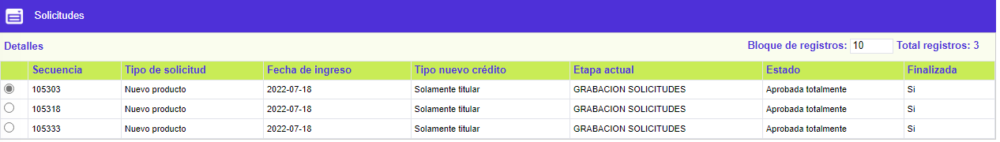
Descripción de campos
|
Secuencia |
Campo que muestra el número o secuencia interno asignados por el sistema a cada una de las solicitudes presentadas por el cliente. |
|
Tipo de solicitud |
En este campo se despliega la información sobre los diferentes tipos de solicitud que el cliente ha presentado a la entidad. |
|
Fecha de ingreso |
Campo que despliega en formato YYYY-MM-DD la fecha en la cual se registró la solicitud en el sistema. |
|
Tipo nuevo crédito |
Si el tipo de solicitud es Nuevo crédito, en este campo se indica si es de solo titular, titular con adicionales o solo adicional el tipo de solicitud presentada a la entidad. |
|
Etapa actual |
En este campo se indica de acuerdo con la parametrización efectuada para el producto y el tipo de solicitud, la etapa en la cual se encuentra la solicitud al momento de la consulta. |
|
Estado |
Campo que muestra si la solicitud se encuentra aprobada totalmente, aprobada parcialmente, negada totalmente, negada paracialmente o en zona gris. |
|
Finalizada |
En este campo se indica Si o No la solicitud ya pasó por la última etapa parametrizada para el producto y tipo de solicitud presentada. |
Calificaciones: en caso que durante el avance de cualquiera de las solicitudes el cliente haya sido enviado para aplicarle el proceso de scoring o calificación, en este formulario se muestra el histórico de las diferentes calificaciones obtenidas.
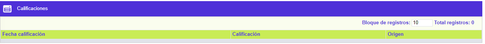
Descripción de campos
|
Fecha calificación |
Campo que muestra en formato YYYY-MM-DD la fecha en la cual se hizo la calificación del cliente. |
|
Calificación |
En este campo se despliega el resultado obtenido por el cliente en el proceso de scoring o calificación. |
|
Origen |
Campo que despliega la información respecto de cual fue el origen a través del cual se obtuvo la calificación del cliente. |